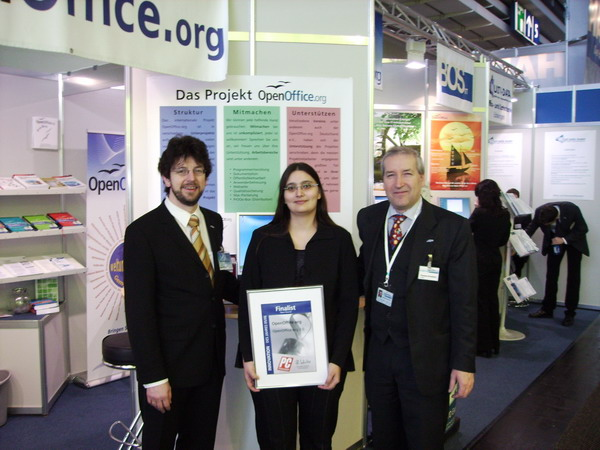

CeBIT 2006Vom 9. März bis 15. März präsentierte das Team von OpenOffice.org die Version 2.0.2 auf der CeBIT 2006 in Hannover. Erstmals war das Projekt mit einem eigenen Stand in Halle 4 vertreten, zusammen mit vier Unterausstellern, die Projekte und Dienstleistungen rund um OpenOffice.org zeigten. Das Messeteam bestand aus Jacqueline Rahemipour und Thomas Krumbein, an einzelnen Tagen ergänzt durch Bernhard Dippold, Volker Merschmann, Simon A. Wilper, Uwe Altmann und Florian Effenberger. 
Mit der frisch releasten Version 2.0.2 im Gepäck wurde an zwei Demopoints der ganze Funktionsumfang demonstriert. Das frische Release hatte eine große Nachfrage nach den PrOOo-Boxen zur Folge, so dass unser Brennroboter gut im Auge behalten werden musste. Die Fragen der Besucher gingen über die ganze Bandbreite der Anwendung, wobei "Womit verdient ihr Geld", "Kann ich meine MS-Office-Dateien importieren" und "Ich habe eine Frage zum Serienbrief" nach "Was ist die Pro-Box" die häufigsten waren. Insgesamt war das Feedback sehr positiv. "Macht weiter so" war oft zu hören. Von den zahlreichen Besuchern aus dem Bereich der IT-Verantwortlichen gab es natürlich noch vielerlei Fragen zur Migration. Gleich am ersten Messetag konnten Jacqueline Rahemipour und Thomas Krumbein (auf dem Foto mit Bernhard Dippold) den zweiten Preis beim Innovationswettbewerb der Zeitschrift "PC Professionell" entgegennehmen. Die Urkunde zierte fortan den Messestand an vorderster Front. Am Samstag fand die Verlosung der Preise für den Vorlagenwettbewerb statt. Leider war niemand der Teilnehmer anwesend, um die Buchpreise, gestiftet vom Verlag Galileo-Press, entgegen zu nehmen. Im Linux-Forum konnten zwei Vorträge zum Thema OOo gehalten werden. Jacqueline Rahemipour sprach am Montag zum Thema "OpenOffice.org 2.0 in Unternehmen - Was leistet die freie Office-Suite im Business-Einsatz?". Am Dienstag gab es einen gut besuchten Vortrag von Thomas Krumbein, Florian Effenberger und Marko Möller zum Thema "OpenOffice.org 2.0 in öffentlichen Verwaltungen - Beispiele aus der Praxis". Eine längere Zusammenfassung von Jacqueline ist unter hier im Mailarchiv der dev-Liste zu finden. Die Vorträge sowie weitere Bilder von OpenOffice.org auf der CeBIT 2006 finden Sie im Dokument-Archiv. Der Dank des Projektes geht an die Firmen Mediabit für den Brennroboter, Shuttle Europe für die PCs der Demopoints und natürlich an unsere Partnerfirmen am Stand: SCAI, O3Spaces, MultiData und BOS-IT. Die Fotos sind dem Projekt von Florian Effenberger und Thomas Krumbein zur Verfügung gestellt worden. Außerhalb des Projektes ist die Nutzung nur mit ausdrücklicher Genehmigung der Fotografen und der abgebildeten Personen zulässig. |
|